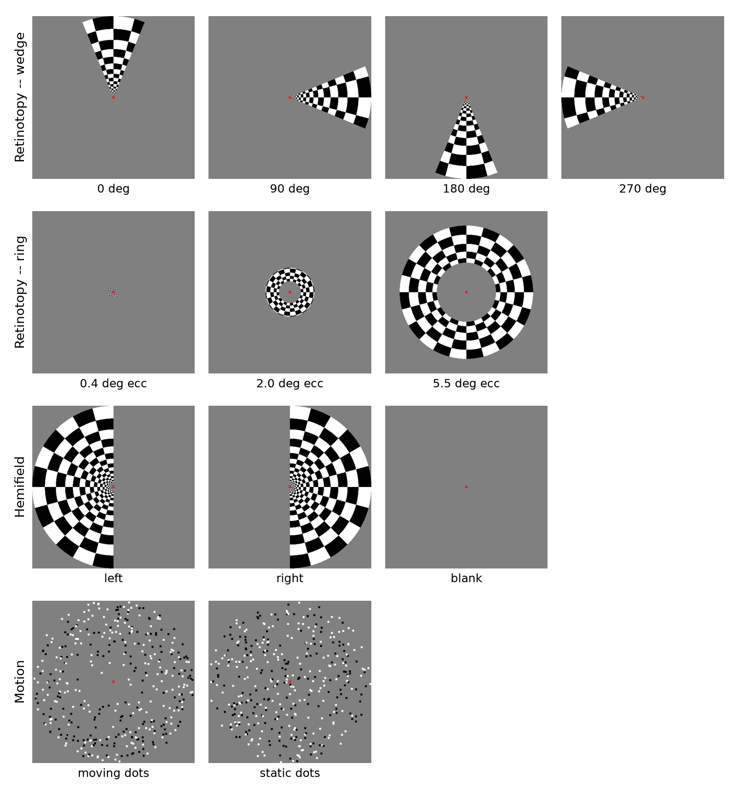
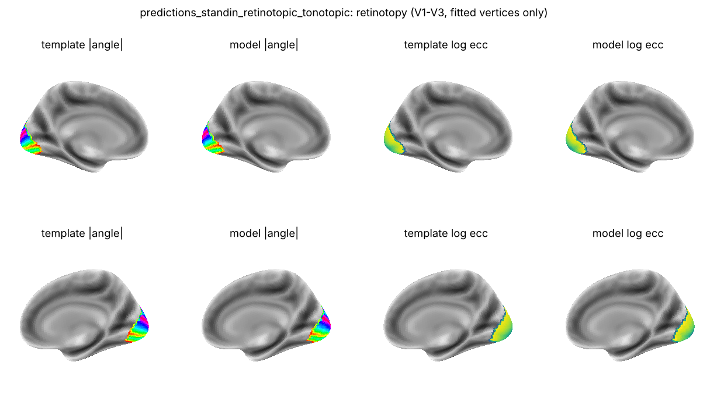
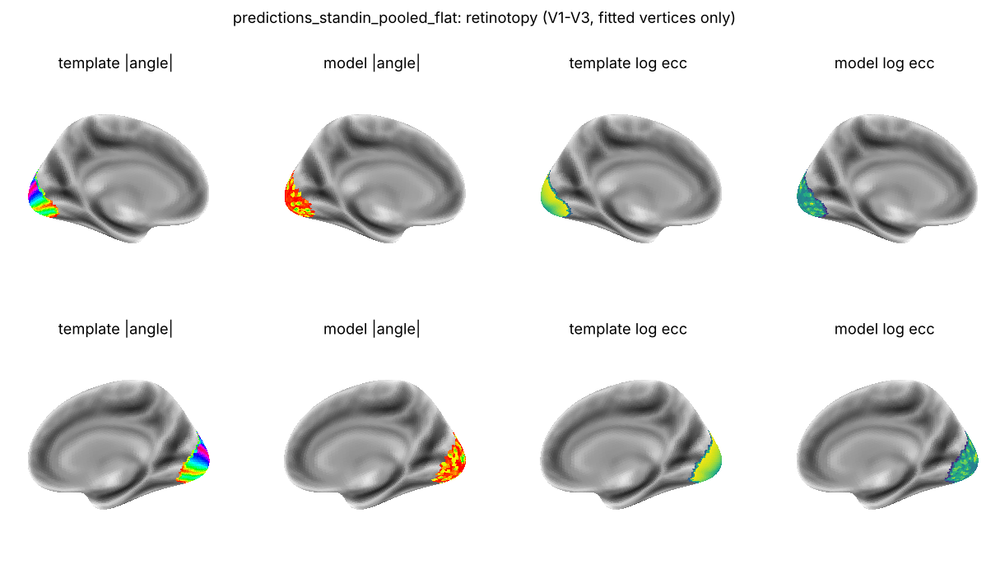
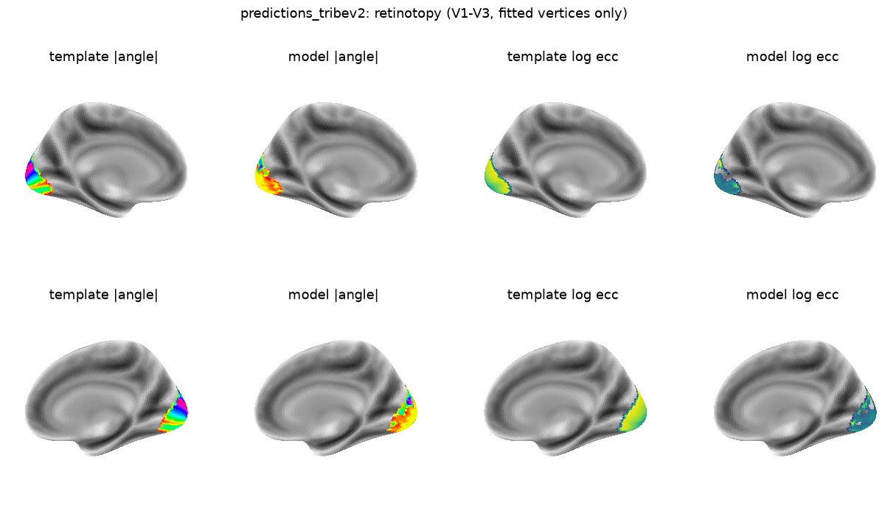
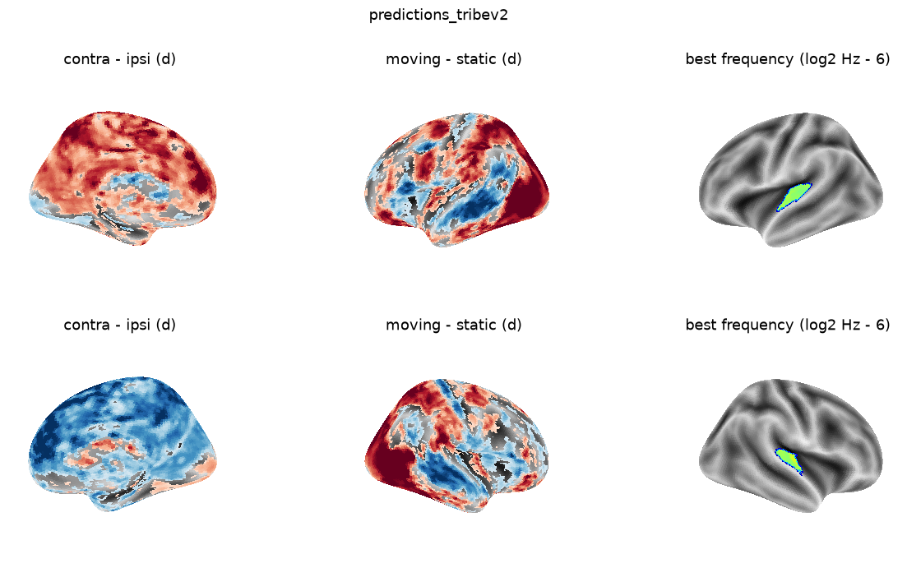
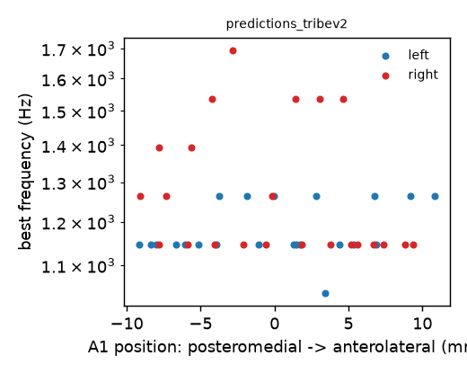

Abstract
Pre-registered hypotheses
Four hypotheses, pre-registered before running the real model on video.
| Hypothesis | Prediction | Verdict |
|---|---|---|
| H1 polar angle / contralaterality |
Absent — no contralateral V1 response, no polar-angle map | Confirmed absent |
| H2 eccentricity |
Partly present — an eccentricity-like gradient from global image statistics | Confirmed (as predicted: not a true positional code) |
| H3 motion |
Present — moving > static dots peaks in MT+ | Confirmed present |
| H4 tonotopy |
Open — best-frequency gradient in A1 | Disconfirmed |
The stimuli
Classic stimuli used to map each system experimentally — the clips below are short, re-encoded loops of the actual videos and audio fed to TRIBE v2 (one representative cycle each; originals run 144–216 s).
Retinotopy — wedge
A 45° checkerboard wedge rotating through a full cycle, used to map polar angle.
Retinotopy — ring
A checkerboard annulus expanding logarithmically from fixation, used to map eccentricity.
Hemifield flicker
Left / right / blank blocks of a flickering checkerboard restricted to one visual hemifield.
Motion — random dots
Radially moving vs. static random-dot fields, used as an MT+ localizer.

Pipeline validation
Before trusting any null result, the whole analysis pipeline was validated against a stand-in model with known ground truth: one mode that "knows" the maps (retinotopic + tonotopic), one that only sees pooled global statistics (pooled + flat) — exactly what TRIBE's architecture predicts.


Real TRIBE v2 results



Robustness controls
Five controls were run to stress-test the headline results.
-
Silent audio vs. no audio. Dropping the video's audio track entirely leaves the
retinotopic null unaffected; the MT+ motion effect survives too, though its magnitude
roughly halves.
R1/R2 stay non-significant · MT+ effect d = 3.25 (p = 0.001) vs. d = 4.31 with audio
-
Eccentricity vs. area. Holding the ring's stimulated area constant across
eccentricity does not null the eccentricity effect — it flips it
significant and positive.
r = 0.469 (p = 0.014) vs. a non-significant r = −0.129 at baseline
-
Stimulus size. Repeating the analysis at
max_ecc_deg5° and 20° was expected to leave rank-based results stable. It didn't: eccentricity becomes significant at both scales, while contralaterality/polar angle stay robustly null.r = 0.440 (p = 0.012) at 5° · r = 0.755 (p = 0.001) at 20° -
Wedge width and check size. Repeating the wedge experiment at 30° and 90°
(vs. the default 45°) leaves H1's central null intact at every width.
Polar-angle correlation stays non-significant at all three widths
-
Loudness-equalized tones. An ISO 226 equal-loudness version of the tone
sweeps rules out "best frequency = loudest frequency" as an alternative explanation.
Tonotopic null persists: r = −0.081 vs. r = −0.067 with equal-amplitude tones
The one result that doesn't hold up cleanly — eccentricity (R3) — flips from a non-significant null to a significant, template-aligned correlation whenever the ring's rendering geometry changes, while contralaterality and polar angle stay null throughout. This looks like the pre-registered H2 scenario: an eccentricity-like signal from global image statistics, not a genuine positional code.